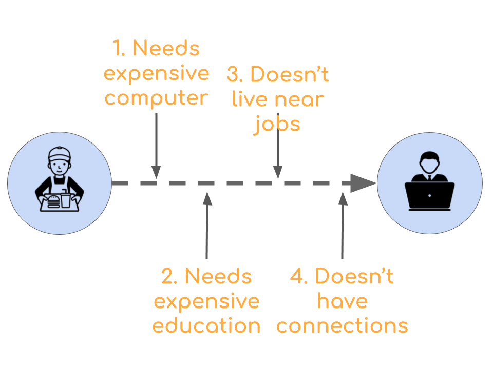
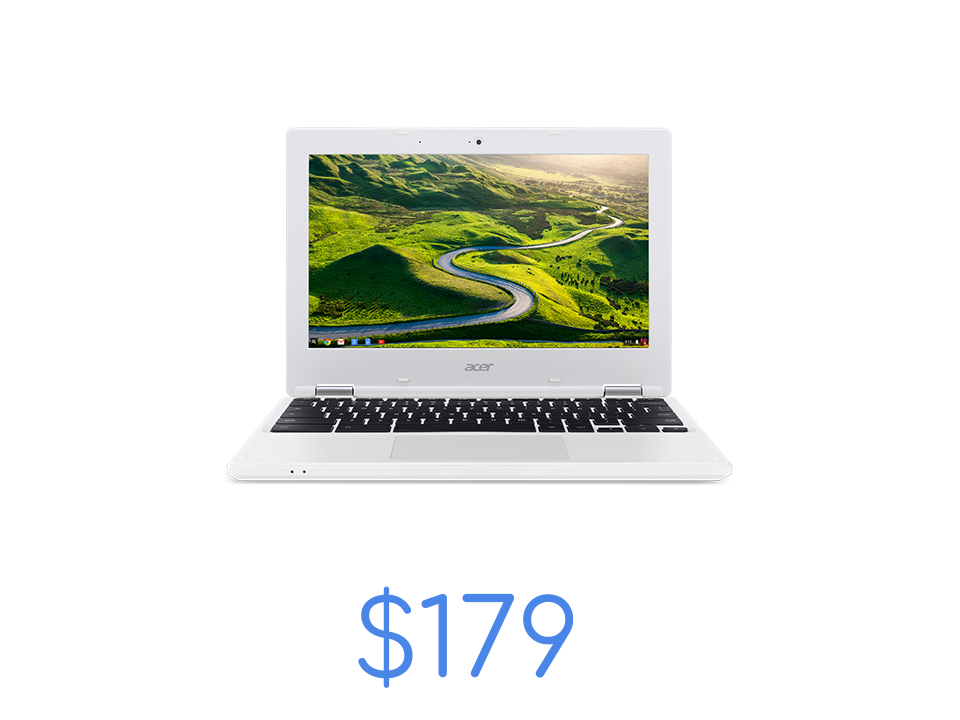

Chromebook Data Science is an online educational program created by a team the Johns Hopkins Data Science Lab. Chromebook Data Science is a sequence of courses that assumes basic computer literacy as a pre-requisite and builds to performing basic data science skills. Our philosophy is to make data science a completely cloud based activity so people can work from where they are rather than being forced to move to high cost centers of data science. If you are a company looking for well-trained data scientists and want to support Chromebook Data Science consider becoming a partner organization.
The problem
Routine and manual jobs are rapidly being automated using newly developed computer, robotic, and machine learning technologies. This trend will accelerate over time.
A solution
At the same time there is strong and growing demand for people with skills in data processing, analysis, and reporting.

Challenges

But people who are currently unemployed or employed in manual or other low tech jobs face barriers to transitioning to data science jobs. The high cost of computing, education, and the centralization of jobs in high-cost metro areas prevent career transitions.
Our approach
We have developed a curriculum that is fully cloud based to allow students to do data science with cheap laptops like Chromebooks.


It is possible to complete our Chromebook Data Science program entirely online, for free. We couple will our online curriculum with in person tutoring and support to ensure equal access for individuals who have not been traditionally well served by online programs.
We partner with companies who need to fill data science roles to place our graduates in remote data science jobs. If you are looking for data scientists consider becoming a Chromebook Data Science hiring partner.